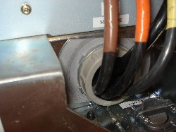
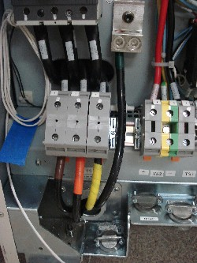
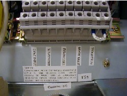

Operating Documentation
Direction 5193574-800, Rev# 22
LightSpeed 7.X Service Methods
Module Version 1.0, Version Date 4/22/10
Operating Documentation |
| Labor: | 1 person; 1 man-hour |
| Tools: |
| ||||
| Lockout/tagout is required before performing this task. All installation work within this section on the power distribution unit should be completed by a licensed electrician only. |
1. Direct the customer electrician to connect power between the Main Disconnect Panel and the PDU. The electrician will need to provide a reducing bushing to attach the flexible conduit to the PDU. |  |
2. Direct the electrician to make the warning light and door interlock connections. | |
3. Supervise the delivery team to unload all of the remaining materials. Move all materials except the gantry to the scan room area. | |
4. Visually inspect the system components for condensation and damage. |
| ||||
| Connecting the primary incoming power in the following steps is performed by the customer’s electrical contractor. The electrician needs to provide a reducing bushing to attach the flexible conduit to the PDU. | ||||
1. Roll the PDU into position, leaving at least 15.5 cm (6 in.) between the PDU and back wall to allow cooling air to circulate. |  |
2. Run the main input power conductors and ground through flexible metal conduit so you can move the PDU away from the wall during service. | |
3. Attach the flexible metal conduit to the PDU and remove the TS1 panel front cover, if present. | |
4. Strip the wires to fit securely on the power block and insert the bare leads into the TS1 power block, observing the correct phase. | |
5. Insert vault ground into PDU vault ground lug & tighten all fasteners securely. Replace the TS1 front panel. | |
6. Make connections at TS6 for X-ray Warning Light and Door Interlock. |  |